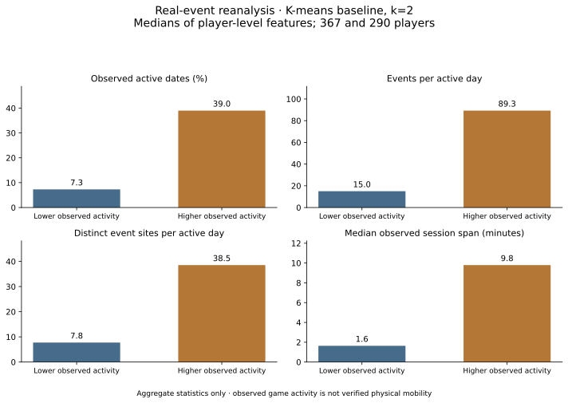

TÉLÉCOM PARIS · ARTISHOW · TEAM OF FOUR
Scrapingress
Analysis of activity patterns in the location-based game Ingress. Based on our four-student ARTISHOW project conducted for Julien Morel, this version extends the analysis with reproducible model comparisons.
K-means, Gaussian mixtures and DBSCAN are compared through resampling, temporal consistency and sensitivity checks. The conclusions describe the observed activity patterns and the limits of the resulting groups.
